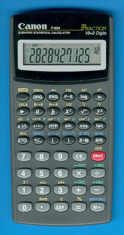

WebCal 計數機網頁
Canon F-604 簡介及內置功能應用

(A) 簡介
Canon F-604為香港中學會考及高級程度會考的准用計數機之一，與Casio fx-50F相同的是使用代數邏輯輸入方法(A.L.)，所以操作的方式與fx-50F相當相似，對於喜歡A.L.輸入法的朋友，Canon F-604是另一個選擇，而售價方面亦相當便宜，大約八十元左右。
與fx-50F比較，這部計算機的功能相對較為精簡，除了不能編寫程式外，亦沒有好像50F的內置程式庫(例如: 一元二次方程)，統計功能方面沒有線性回歸，基數功能方面沒有邏輯計算功能，不過較特別的是這部計數機有複數計算功能，可以計算複數的加、減、乘及除。數值記憶則有11個，較50F多5個記憶。統計功能雖然沒有線性回歸，但可以對已輸入的統計數據進行編輯及翻閱(EDIT)。計算機的運算速度亦較fx-50F快。
(B) 內置功能及應用
1. 分數計算 (fraction calculation)
2. 座標轉換 (Co-ordinate Conversions)
3. 基數計算 (N-base calculation)
4. 複數計算 (Complex Number Calculation)
5. 角度單位轉換 (Angular Unit Conversions)
6. 小數位、有效數字及工程記數法的設定 (decimal places, significant figures and engineering notation)
7. 記憶計算 (Memory calculations)
8. 常量計算 (Constant calculations)
9. 百分率計算 (Percentage calculations)
10. 統計計算 (Statistics calculations)
1. 分數計算 (fraction calculation)
使用 ab/c 分數鍵輸入分數或帶分數
例如: 1/3 按 1 ab/c 3
帶分數 2¾ 按 2 ab/c 3 abc 4
計算結果若為大於1的分數，答案會以帶分數形式顯示，若果要顯示假分數可以按 2ndF d/c轉化為假分數。得出分數結果時可以按 ab/c 將分數變為小數形式，再按多一下 ab/c 則會變回分數形式，但要注意對計算出的小數答案，這部計算機是不能直接將小數轉化為分數
2. 座標轉換 (Co-ordinate Conversions)
注意: 以下例子是在DEG MODE之下執行
例題1: 將直角坐標x=3及y=4轉為極坐標。
按 3 a 4 b 2ndF R→P (顯示答案 r為5) 再按 b (顯示答安θ為53.13010235°)
例題2: 將極坐標r = 2及θ=30°轉為直角坐標。
按 2 a 4 b 2ndF R←P (顯示x為1.732050808) 再按 b (顯示y為1)
例題1: 將2610轉為二進制、八進制及十六進制。
假設計算機原先是十進制輸入狀況，若果不是十進制請先按 2ndF →DEG
按 26 2ndF →BIN (顯示11010，即是110102，這時計算機亦顯示BIN的細字)
再按 2ndF →OCT (顯示32，即是328，這時計算機亦顯示OCT的細字)
再按 2ndF →HEX (顯示1A，即是1A16，這時計算機亦顯示OCT的細字)
計算完結後，按 2ndF →DEC 返回正常計算用的十進制。
例題2: 將AB16轉為十進制。
按 2ndF →HEX A B 再按 2ndF →DEC (顯示答案為171)
4. 複數計算 (Complex Number Calculation)
這個功能可以計算複數的加、減、乘及除。
注意以下例題都要在複數模式中進行 (按 2ndF CPLX 進入複數模式)
完成所有複數計算後，再按多一次 2ndF CPLX 返回正常計算模式。
例題1 : 計算 (11 - 7i) + (7 + 10i) - (11 + 2i)
按 11 a 7 +/- b + 7 a 10 b – 11 a 2 b = (顯示 實數部為7) 再按 b (顯示虛數部為1)
因此 (11 - 7i) + (7 + 10i) - (11 + 2i) = 7 + i
例題2: 計算 2(3–2i)(4 + 5i)
按 2 a × 3 a 2 +/- b × 4 a 5 b = (顯示 實數部為44) 再按 b (顯示虛數部為14)
因此 2(3–2i)(4 + 5i) = 44 + 14i
計算完結後按 2ndF CPLX 返回正常計算模式。
5. 角度單位轉換 (Angular Unit Conversions)
不同角度度單位的選用，不斷 按 DRG 鍵，直至顯示要使用的角度單位，DEG細字代表使用度數單，RAD細字代表使用弧度數單位，GRAD代表使用百分度單位。
例題: 將60° 轉換為RAD(弧度數)及GRAD。
假設現在是在DEG單位之下，若果不是DEG，則重複按 DRG，直至出現DEG。
再按 2ndF DRGà (顯示GRAD及答案為66.66666667)
再按 2ndF DRGà (顯示DEG及答案為60)
所以 60°= 1.047197551 rad = 66.66666667 grad
6. 小數位、有效數字及工程記數法的設定
(decimal places, significant figures and engineering notation)
按 F←→S 可以將數值以有效數字形式顯示
按 ENG 可以將數值以工程記數法形式顯示，在第一次按ENG後，若果想用低一級的單位表示，可以再按ENG，若果想用大級的單位表示，可以按 2ndF ←。
按 2ndF FIX 再按 數值 (可以是0-9的數值) 設定顯示小數點後的位數，按 2ndF FIX . 可取消這個設定。 注意: 取小數位後，答案雖然有四捨五入，但實際內的數值依然使用12個位的數值，因此若果希望捨去尾位的數值再計算，請再按 2ndF Rnd。
例題1: 將 789123 米(m)變換為公里(km)表示。
按 789123 ENG (顯示 789.123×103，亦即是789.123公里)
例題2: 將 0.012345克(g)變換為毫克(mg)表示。
按 0.012345 ENG (顯示12.345×10-3，亦即是12.345毫克。)
例題3: π值以小數點後四位表示。
按 2ndF π 再按 2ndF FIX 4 (顯示3.1416)
計算完結按 2ndF FIX . 取消設定。
獨立記憶M
將數值儲存到獨立記憶: 按 X→M
例如: 99 X→M
增加獨立記憶的數值: 按 M+
例如: 按 30
顯示及提取獨立記憶: 按 MR
註: M+還有相當於等號=的完結功能。
常數記憶
將數值儲存到常數記憶: 按 STO 再按記憶位置 (0至9)。
例如: 按 99 STO 1
顯示及提取常數記憶: 按 2ndF RCL 再按記憶位置 (0至9)
例如: 按 2ndF RCL 1
8. 常量計算 (Constant calculations)
常數計算能夠應用在加數、減數、乘數及除數，使計算化簡。
例題1: 計算 12 - 9, 34 - 9 及 95 - 9的值。
按 12 - 9 = (顯示3) 34 = (顯示25) 95 = (顯示86)
例題2: 計算 12 × 23, 12 × 34 及 12 × 55 的值。
按 12 × 23 = (顯示276) 34 = (顯示408) 55 = (顯示660)
例題3: 計 125÷5, 75÷5 及101÷5
按 125 ÷ 5 = (顯示25) 75 = (顯示15) 101 = (顯示20.2)
例題4: 一等差數列的首項為3，公差為7，求首5項。
按 3 + 7 = (顯示10) = (顯示17) = (顯示24) = (顯示31)
所以首5項為 3, 10, 17, 24 及 31。
9. 百分率計算 (Percentage calculations)
增加計算:
例題1: 計算 200×30% 及 200×(1+30%)的值
按 200 + 30 2ndF % (顯示200×30%的值為60) = (顯示 200×(1+30%)的值為260)
折扣計算:
例題2: 計算 200×30% 及 200×(1-30%)的值
按 200 - 30 2ndF % (顯示200×30%的值為60) = (顯示 200×(1-30%)的值為140)
10. 統計計算 (Statistics calculations)
操作說明:
統計模式切換: 按 2ndF STAT 進入統計模式，進入後計算機右上角會出現STAT的細字，計算完結後再按 2ndF STAT 返回一般計算模式，這時所有統計數據亦會被清除，右上角STAT的細字會消失。
統計數據輸入: 按 DATA ，計數機會顯示閃動的dAtA 及一個數字，數字代表開始輸入數據的總數，輸入統計數據時，若果數據的頻數多於1，可用乘號輸入，例如: 3的頻數為10時，可以按 3 × 10，當按任何統計功能鍵(包括DATA)，數據會確認輸入，按 DATA除了確認輸入同時可以繼續輸入下一個數據。
統計數據修改: 若果輸入統計數據後而未按任何統計功能鍵，那麼統計數據未完成輸入，需要修改只要按 ON/C 取消數值，重新輸入新數值即可。若果數據已完成輸入，要按 2ndF [EDIT]進入編輯模式進行修改，這時會有ED細字出現，再按 DATA 會顯示 dAtA 及數字，數字代表現在編輯數據的位置，接著會閃動顯示你己輸入數據，要修改則輸入新數據即可，若果要刪除數據按 2ndF [DEL] 即可，再按DATA 則會顯示下一個編輯數據，完成所有編輯數據，再按 2ndF [EDIT] 離開編輯模式，ED細字亦會消失。
統計變數顯示:
數據的總量n: 按 n
數據的總和Σx: 按 2ndF [Σx]
數據的平方總和Σx2: 按 2ndF [Σx2]
數據的平均數x: 按 x
數據的樣本標準差S: 按 S
數據的標準差σ: 按 2ndF [σ]
例題: 計算以下一組數值75, 80, 80, 85, 85, 85, 85的平均數及標凖差。
按 2ndF STAT進入統模式(會顯示STAT細字) 再按 DATA
75 DATA 80 DATA 80 DATA 85× 4 x (顯示平均數為82.143)
2ndF [σ] (顯示標凖差為3.642)
計算完結後，按 2ndF STAT 返回一般計算模式。